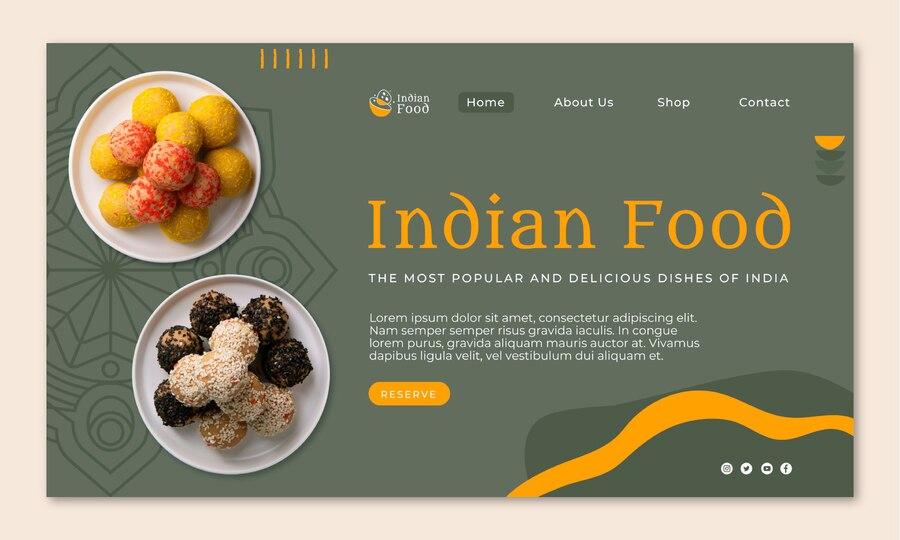

About Store
The basic aim of a food store is to maintain an adequate supply of foods for the immediate needs of the business with the very minimum loss through spoilage and pilferage. This entails establishing standards and standard procedures for storing..

What We Do
We guarantee you the best quality menu with the lowest price. Right now we only serve you in Bandra.
To have a more convenient dining experience, for you we deliver your selected menus at your doorstep at your selected
time slot. As in today's era every person sense short in time & also its hard to find if the consumable food stuff are
healthy/natural. So to tackle this issue we serve you with the finest & hand-coocke food from all the categories,
to save your time from the conventional dining as well as
from the problems like waiting in long queues at restaurants, the parking issue & etc.
Our Vision
To evaluate the way of interaction with customers.
To develop a restaurant ordering system with web application based on the client server application.
To determine the factors that influence customer when ordering food online.